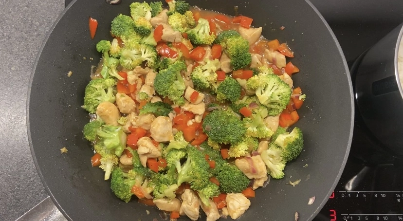
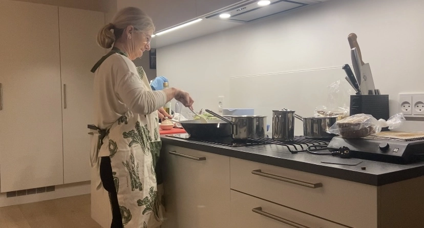
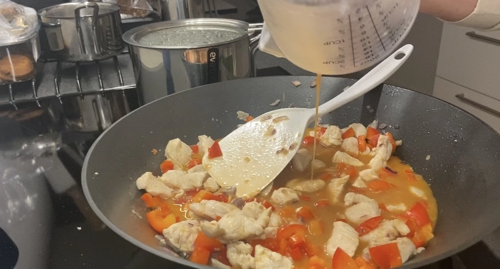
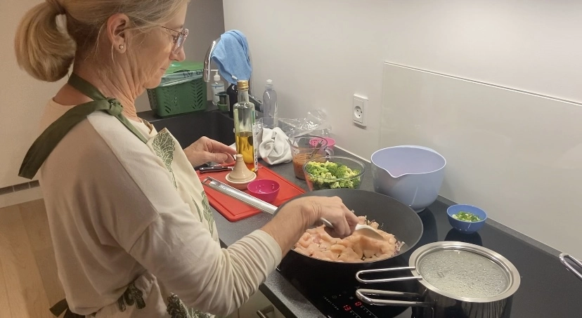

Pia - Passion for madlavning
Denne pilotvideo handler om Pia, som har en passion for madlavning. Ud over rigtige kokke findes der mange almindelige mennesker, der via deres interesse og passion for madlaving, har udviklet en kompetence til at frembringe lækre og smagfulde retter.
Pilotvideo
Se denne video og hør hvordan Pia's passion er opstået.




Medvirkende: Pia Christiansen
Produceret af Josephine Bjørn Christiansen